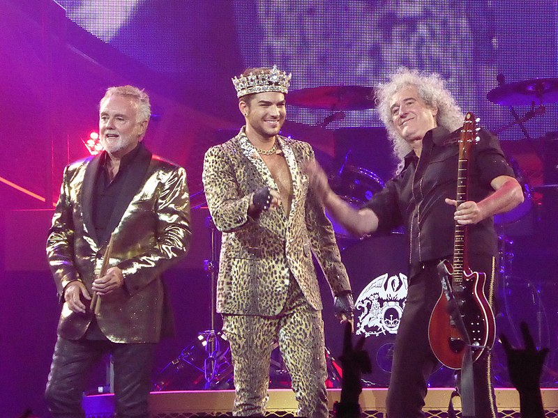

Queen + Adam Lambert
Queen + Adam Lambert é uma banda britânica de rock, formado por Brian May e Roger Taylor, integrantes do Queen juntamente com o cantor Adam Lambert. A parceria foi firmada após o fim do Queen + Paul Rodgers em 2009, quando Brian e Roger participaram do reality show American Idol e Adam era um dos concorrentes. Os demais integrantes do Queen não estão envolvidos no projeto. O baixista John Deacon, afastado da vida pública desde o fim dos anos 1990 se recusou a participar do supergrupo, enquanto o pianista e vocalista Freddie Mercury morreu de pneumonia, agravada pela AIDS, em 1991. Juntamente com o tecladista Spike Edney, o percussionista Rufus Tiger Taylor, filho de Roger Taylor, e o baixista Neil Fairclough, o supergrupo se apresenta desde 2011.
Em 2014, o grupo lançou o álbum "Live in Japan" tocando no evento "Summer Sonic". Anos depois, em Outubro de 2020, eles lançaram seu disco ao vivo com apresentações internacionais, chamado "Live Around the World". A parceria Queen + Adam Lambert atraiu mais controvérsias que a Queen + Paul Rodgers e dividiu opiniões do público, no entanto, Brian May e Roger Taylor declararam que trabalhar com Lambert trouxe resultados mais positivos do que com Paul Rodgers.